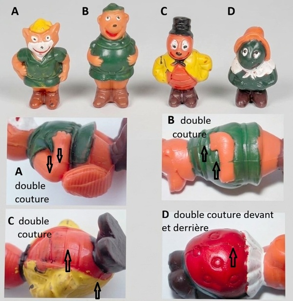
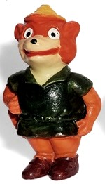

Robin des Bois série 1
4 sujets
| 1976 | Robin Hood (série 1) |
| Inscription sur les sujets |
| Sans inscription |
| Contrefaçon |

| 1 | Robin Hood (Robin Hood) |

Robin des Bois
La figurine allemande est en matière orange ou beige et son museau est toujours peint en blanc.
La version anglaise est en matière blanche, son museau n'est pas peint et elle brille sous une lumière UV.
| 2 | Petit Jean (Little John) |
Petit Jean
La figurine allemande est en matériau de base orange ou beige.
La version anglaise est en matériau de base blanc, mais sa peinture est légèrement différente. Elle est fluorescente sous lumière UV.
| 3 | Prince Jean (Prinz John) |
| b |
|---|
Prince Jean
La figurine allemande est faite d’un matériau de base orange.
La version anglaise est faite d’un matériau de base blanc et brille sous une lumière UV.
| 4 | Marianne (Maid Marian) |
Marianne
La figurine allemande est en matériau de base orange et possède un col peint en blanc.
La figurine anglaise est en matériau de base blanc, possède un col non peint et brille sous une lumière UV.